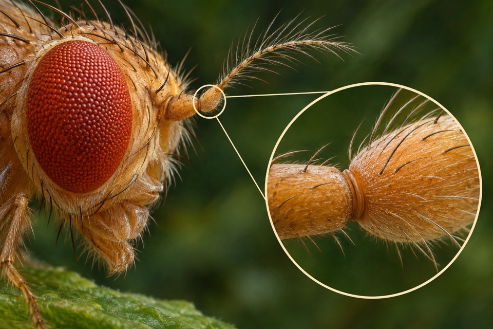
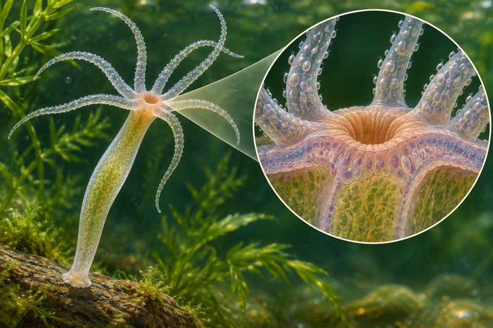
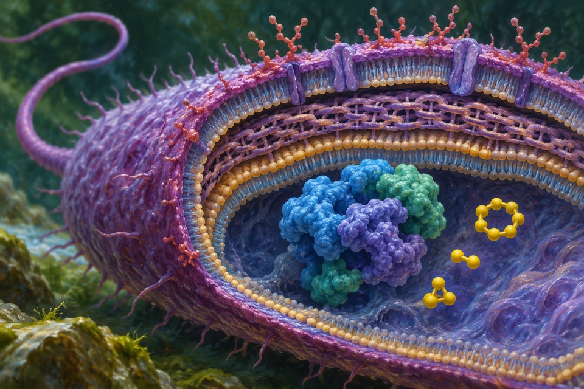
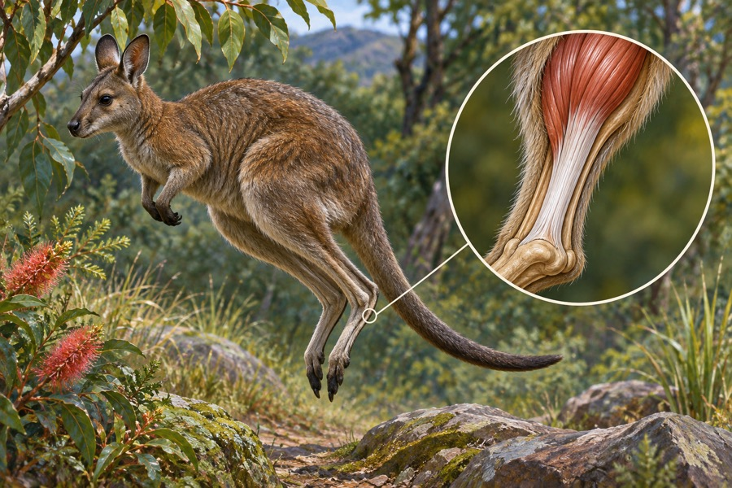

Module 01
Higher thiamin content in polished rice
Increase and measure vitamin B1 in the rice endosperm retained after polishing.
Evidence recordOpen any of the ten modules to see the reported observation, its sources, and the research questions still open.
Increase and measure vitamin B1 in the rice endosperm retained after polishing.
Evidence record
Measure neural or behavioral responses to sustained antennal displacement.
Evidence record
Score annular or spiral versus reticulate or pitted secondary wall morphology and record where those cells form.
Evidence record
Measure formation of glutamine–lysine isopeptide bonds and distinguish catalytic activity from total expressed protein.
Evidence record
Distinguish a change in selenium chemical form from a change in total tissue selenium.
Evidence record
Measure whether body-column tissue acquires head-organizer activity.
Evidence record
Observe the transition between condensed and dispersed protein states and the associated sieve-tube occlusion.
Evidence record
Account for electrons and sulfur products during thiosulfate oxidation.
Evidence record
Measure the proportion of oleic acid and the complete fatty-acid profile in soybean seed oil.
Evidence record
Estimate stored and returned mechanical energy over a hop.
Evidence record